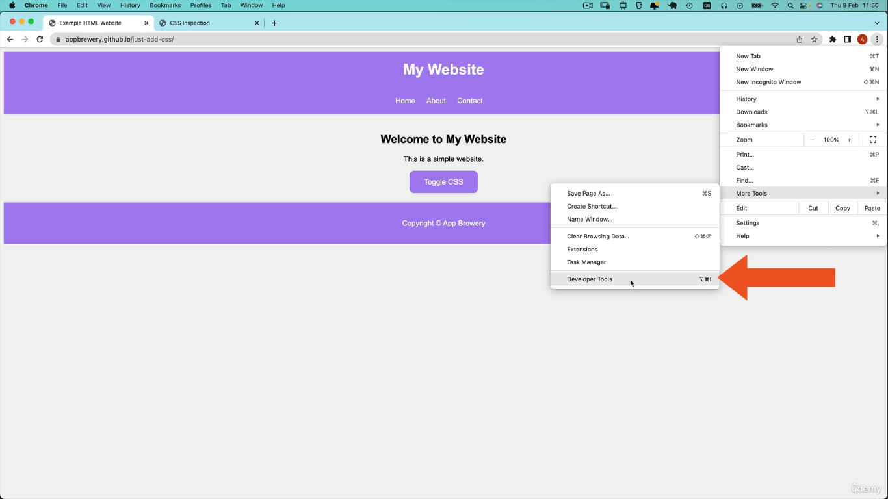
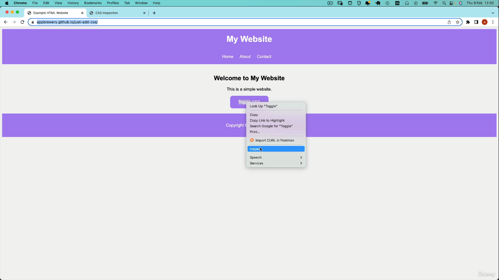
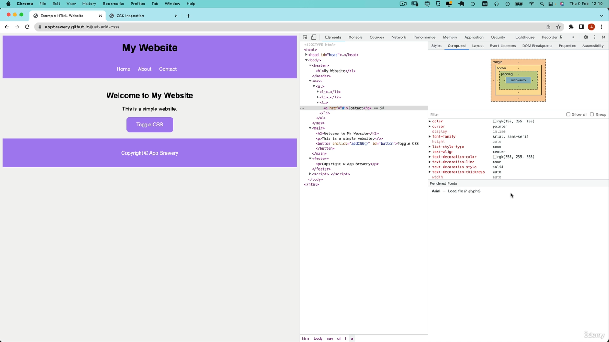

Now in this lesson, we're going to deep dive into "CSS Inspection" & learn about the Chrome Developer Tools that allow us to figure out what our CSS is doing & potentially diagnose any bugs or resolve any issues.
As I mentioned before, the Chrome Developer Tools are a really powerful suite of tools that is completely free & comes bundled with the Chrome browser.
📜https://appbrewery.github.io/just-add-css/
We can use this as an example to learn more about CSS inspection.

Using Inspect

Another way of bringing up the Developer console is simply to right-click on any element you're interested in, & then click on Inspect & it will do the same thing but in addition, it will highlight in the HTML that element that you selected.
Now what if you wanted to select a different element while you're here?
Well, you can use this button up here to select an element visually.
Whenever you insert a HTML element, it comes with automatic preloaded CSS & that's what you're getting by default.
Now, the important thing to remember is any of the changes that you make in the Chrome Developer Tool does not affect your original file. It's just you affecting your local copy that's loaded up inside the Chrome browser.
Even if you load up one of your local websites that you're developing, & you change a whole bunch of things, this is just temporary.
It's for you to look & try things out & see how you like it before you add these rules into your actual CSS source code.
The main thing to focus on here is how to use the Inspector to understand other peoples', as well as your own websites & how the CSS is laid out.
The Computed Tab
So how do you know what's actually being applied to your CSS element?
Well, that's where the "Computed tab" comes in, coz when you click on it, you'll see the actaul color in terms of RGB.
So how much red, green & blue is being applied to the text color & other properties as well, & it removes all of the craziness of all the crossing-out stuff. And you can actually see in one place what is being applied.

CSS Overview
Now another feature of Chrome Developer Tool that I find really useful is CSS Overview.
This is a neat feature where you can select "Capture overview" & it will show you a bunch of useful things like, for example, that there are 2 background colors.
The different text colors.
And we've also got information on the different fonts that are being used on the web page.
I find this really neat when I come across a website that I really like & I'm trying to figure out, oh, what font is that? So you can see the colors, you can see the fonts.
And maybe I can copy it for my own use later on.
Have a play around with the CSS Inspector & I want you to take a look @ selecting different elements, looking @ their styles, trying to add some styles in the Chrome Developer Tools & looking around @ some of the other things we've mentioned.
Quiz
✍https://appbrewery.github.io/css-inspection/
Use the CSS inspector to answer the 4 quiz questions & once you've put in the answer, click Submit & you'll see if you got it right or if you got it wrong.